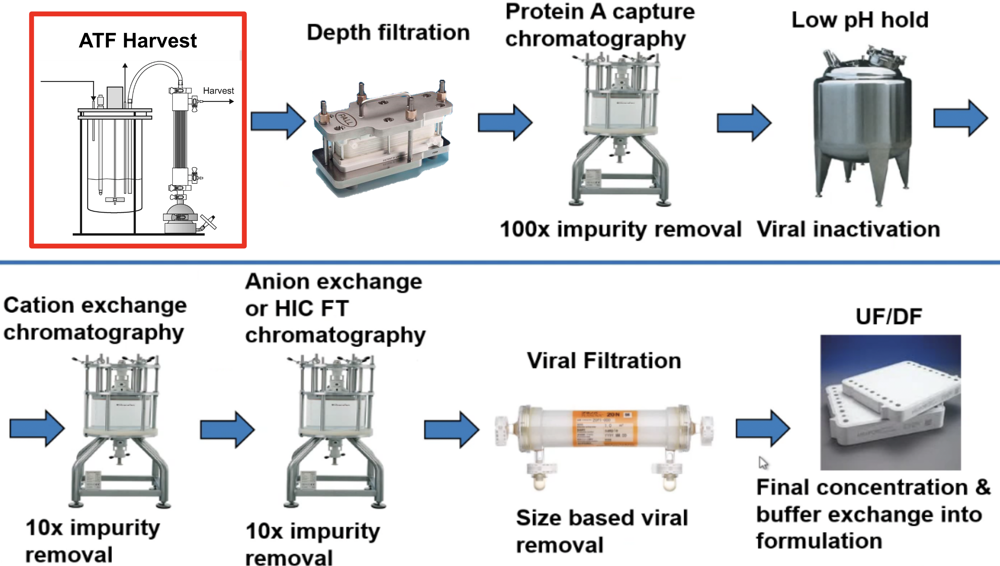
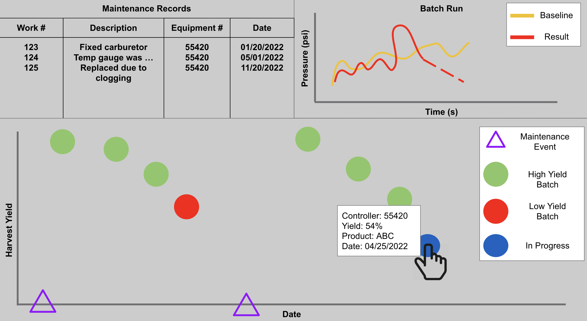
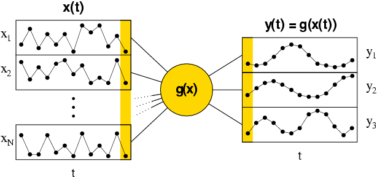

Anomaly Prediction for UF/XMF Filtration using Machine Learning
A case study was done at Amgen to show how predicting filter failure at this ONE step in the
process
could save millions of dollars per manufacturing site, per year!

My Role
Data Engineering 🌥
I set up a Databricks job to automate a data pipeline to fetch information from OSI PI
(hardware),
Maximo (maintenence records), and our MES system (batch records)! The information was stored
into our AWS Redshift cloud.
Data Analyst 📈
The data was visualized using Spotfire for our manufacturing staff to enable them to be more
informed on our manufacturing
process from a 1,000ft view. Upstream operations can see potential roadblocks, and downstream
can see potential delays!
Front-End Developer 🎨
Enhanced the user's ability to predict batches in real time by leveraging a slow-feature
analysis Machine Learning algorithm. I
built a Dash app to enable users to select baseline
batches to train the model, and predict
a batch's success.
Machine Learning Engineer 🧠
Built a slow-feature analysis algorithm to give subject matter experts the ability to leverage
their expertise and hand-select good training
data, and built an autoencoder to build an autoencoder algorithm to limit bias.
The Problem
Problems in the ATF section of the downstream manufacturing unit can cause delays in
subsequent
unit operations and an overall decrease in revenue

Our Approach
Here's a low-fidelity copy of the dashboard (for privacy reasons) 😎
At the 1,000ft view, a user could clearly see that there was predictability that running multiple
batches on a single filter
without maintenence is a terrible idea from the large graph on the bottom. Which, at the time, being
able to visualize this data was
already a huge win.
However, what if I told you we could predict a filter's performance in
real-time using
data from all 12 of it's pressure, positioning, and cycle time sensors?
Modelling

Slow-Feature Analysis
Slow feature analysis (SFA) algorithm is an unsupervised learning algorithm for extracting slowly varying
features from a quickly varying input signal.
Given a set of batches that display optimal performance, the algorithm would be able to determine how
much a batch varies from optimal performance. To implement this,
we set a threshold variance value such that if the filter started deviating from normal performance, it
would alert users!
Autoencoder
An autoencoder is a type of artificial neural network used to learn efficient patterns and trends of
unlabeled data.
Our autoencoder is trained on various “good” batches, reconstructs them into one matrix, which
subsequent batches are compared against to determine a “health score”. This
approach attempts to look at the data from a batch as a whole, as opposed to the variance from different
data points. By providing a separate scoring system, we gave our users
the ability to have a double-confirmation of poor performance.
Learnings
This was a great first data science project with real-world impact! We scaled this system to 3
international sites
while maintaining loyal adoption and steady feedback from our user group. From onboarding remotely
during the pandemic,
it was refreshing to see how this dashboard was constantly on display in common areas during my on-site
visits.
"The RTATF dashboard enables staff to allocate time towards the other
unit operations
that typically require more attention"
After seeing the RTATF dashboard project from inception to implementation, it
was a shame that I couldn't
spend
more time acting on user feedback after it matured into coworker's workstreams. I was rotated into a new
medical function
after 8 months of tinkering. However, the full-stack engineering experience was extremely beneficial to
my career in both
data science and software engineering!